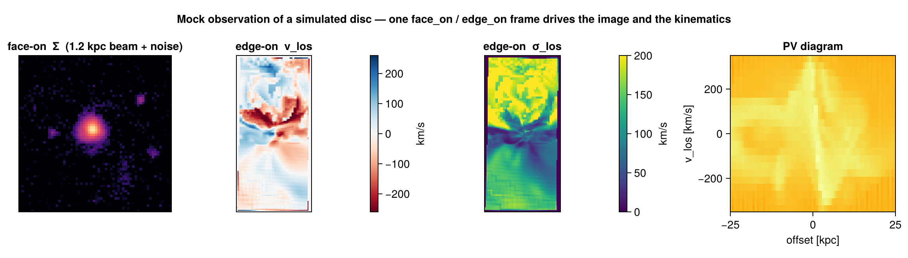

Mock Observations (cookbook)
Mera ships a full mock-observation toolkit — beam/PSF convolution, velocity cubes and moment maps, position–velocity diagrams, spectra, emission maps, and FITS export. This page ties them together with the auto-frame: orient the galaxy once, then reuse that frame to produce the image and the kinematics, exactly as a telescope would see them.

The rule of thumb the figure follows: face-on for morphology, edge-on for kinematics (a disc's rotation is in its plane, so it shows up along the line of sight only when the disc is tilted toward edge-on).
Step 0 — orient once, reuse everywhere
face_on / edge_on return a frame whose los/up/center feed every function below. Compute it once so the image and the kinematics share the same geometry:
using Mera
gas = gethydro(getinfo(100, "/data/Mera-Tests/spiral_clumps"))
fo = face_on(gas; aperture=0.3) # disc spin axis (aperture isolates the disc)
eo = edge_on(gas; aperture=0.3)
view = (; center=fo.center, range_unit=fo.center_unit,
xrange=[-0.22, 0.22], yrange=[-0.22, 0.22]) # zoom onto the disc(For a crowded or cosmological box, give face_on a seed center + aperture so it locks onto one object — see Auto-Frame.)
Step 1 — a mock image (beam/PSF + noise)
Project the quantity, then convolve with a beam and add noise via mock_observe:
pr = projection(gas, :sd; los=fo.los, up=fo.up, view...)
img = mock_observe(pr, :sd; beam_fwhm=1.2, beam_unit=:kpc, # a physical beam …
noise=0.004*maximum(pr.maps[:sd]), rng=MersenneTwister(1))The beam can also be angular — give beam_unit=:arcsec (or :arcmin/:deg) together with a source distance; the physical beam is then θ × distance (small-angle). Use Mera's cosmology helpers for the angular-diameter distance of a redshifted source. A seeded rng makes the noise reproducible.
Step 2 — velocity field and dispersion (moment maps)
velocity_cube builds a spectral (velocity-channel) cube along the line of sight; velocity_moments collapses it to the moment-0/1/2 maps Σ, vlos, σlos:
vc = velocity_cube(gas; los=eo.los, up=eo.up, view...,
nv=90, vrange=[-350, 350], v_unit=:km_s)
m = velocity_moments(vc) # m.Σ (column), m.vlos (rotation), m.σlos (dispersion)vrange acts like a spectrometer bandwidth — windowing out high-velocity outliers. The binned σlos is biased slightly high for under-resolved lines (Sheppard correction); for a bias-free velocity or dispersion map of any vector, use los_component(gas, (:vx,:vy,:vz); dispersion=true), which accumulates the moments from the continuous per-cell samples.
Step 3 — position–velocity diagram
position_velocity bins mass into (offset along an in-plane axis, line-of-sight velocity) — the classic long-slit / PV kinematic diagnostic:
pv = position_velocity(gas; los=eo.los, up=eo.up,
center=fo.center, range_unit=fo.center_unit,
nbins=160, offset_unit=:kpc, v_unit=:km_s)
# pv.offset, pv.velocity (bin edges), pv.pv (the nbins×nbins mass map)Step 4 — spectra and emission
getspectrum(vc; x=0, y=0)returns the line-of-sight spectrum through a sky pixel (a synthetic emission-line profile from a velocity cube; a PDF from alos_cube(:T)).integrated_spectrum(vc)sums it over the whole map — the global line profile.emission_map(gas; kappa, source)makes an optical-depth-weighted emission map (an absorption/emission line image) rather than a plain column.
Step 5 — export to FITS / cubes
savefitswrites a map or cube to FITS with a WCS (linear or sky), so it opens in DS9 / astropy / CASA. It is a package extension —using FITSIOfirst.savecube/loadcuberound-trip a velocity cube via JLD2.
See also
- Auto-Frame —
face_on/edge_onand the crowded-box recipe. - Off-axis projection — the projection engine and its view keywords.
- LOS cubes & kinematics — the velocity-cube machinery in depth.
- Time Series — wrap any of the above in a reducer to watch it evolve.